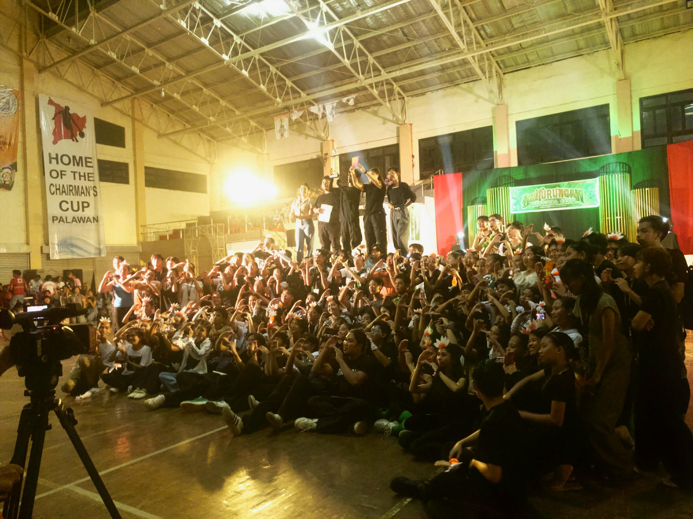
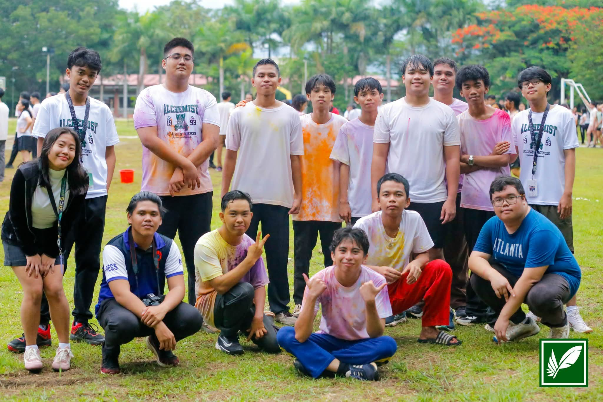

1
Choose
Select the photographs that mean the most to you.
Every moment deserves to be remembered.
Saving Memories is a special place where you can collect and preserve your favorite photographs, meaningful moments, and unforgettable stories throughout your life. Every picture holds a memory, every moment tells a story, and every memory reminds us of the people and experiences that are important to us. This space allows you to keep those precious memories safe, revisit them whenever you want, and treasure the moments you never want to forget.
Just sign up here →Turn your favorite moments into a personal collection. Add photographs, give them meaningful titles, and write the stories behind them.
Select the photographs that mean the most to you.
Add a title, caption, or story behind each moment.
Build a collection you can revisit whenever you want.


The memories we create can bring us back to a special place, a meaningful moment, a familiar feeling, or someone important in our lives. As time passes, small details may slowly fade, but the memories we choose to preserve can continue to remind us of the experiences that shaped who we are. Saving these moments allows us to look back, appreciate our journey, and keep the people, places, and experiences we cherish close to our hearts.
Photos capture meaningful experiences that we can look back on in the future.
A picture becomes more meaningful when it is accompanied by the story behind it.
Return to your favorite memories and revisit the moments that matter.
"One image can bring back a thousand memories."
"You will be remembered for the memories you create, not the things you own."